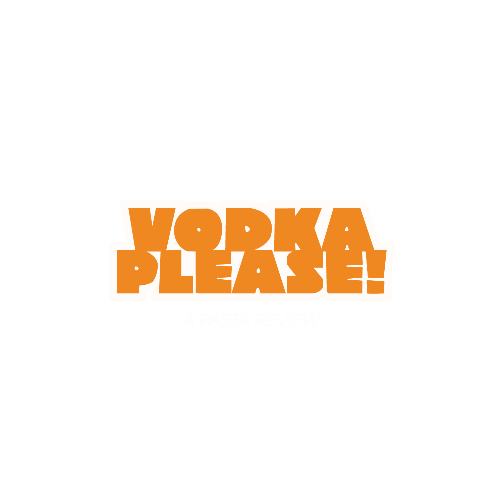
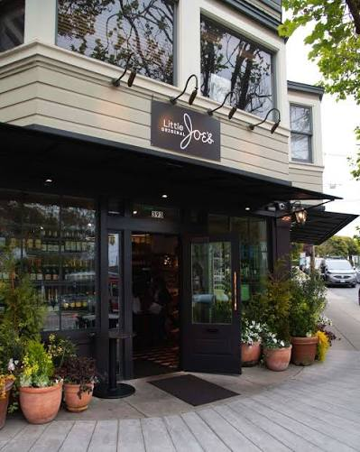
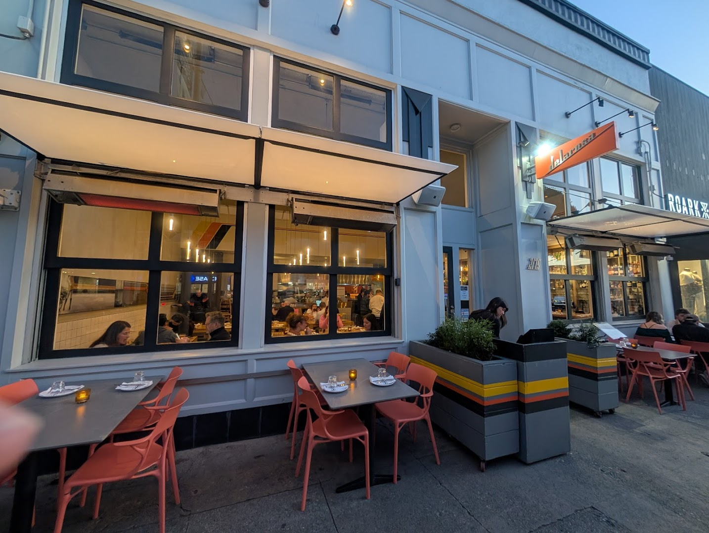
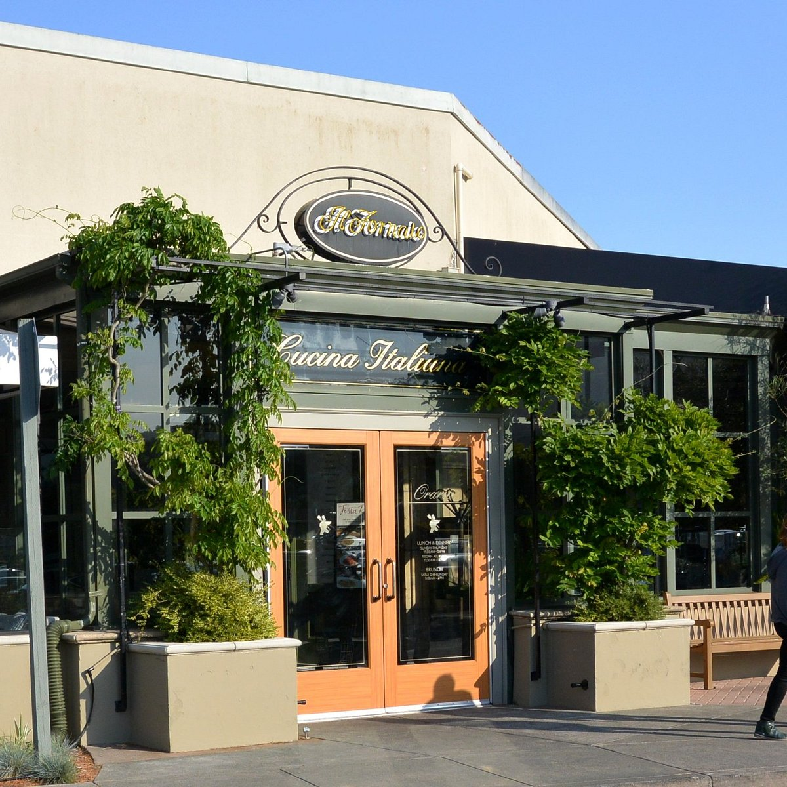

Welcome to Vodka Please!, the perfect spot for all your pasta needs. This weeks plates left me full, so check out the reviews and figure out which of the three is the winner for this week!

ORIGINALA San Francisco staple since 1937, Original Joe's is known for its classic Italian-American dishes, generous portions, and lively atmosphere.

DELAROSAA Marina District favorite since 2010, Delarosa is known for its pizzas, handmade pasta, shareable Italian plates, and lively atmosphere.

IL FORNAIOAn Italian restaurant in Corte Madera known for its fresh pasta, wood-fired pizzas, and traditional Italian dishes.